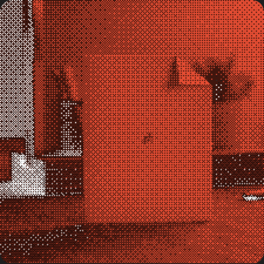
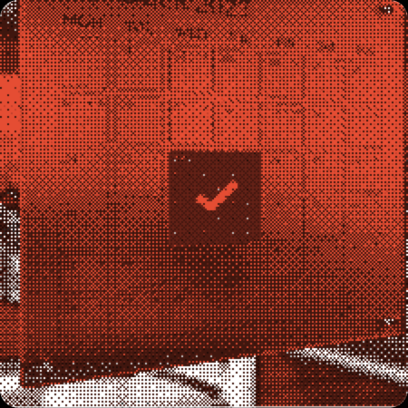
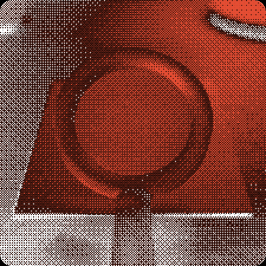
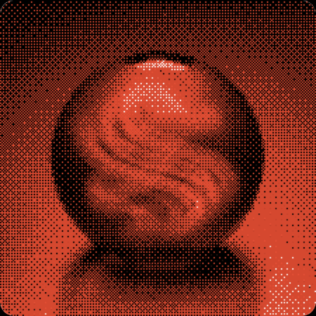
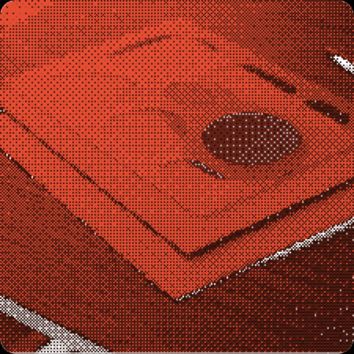
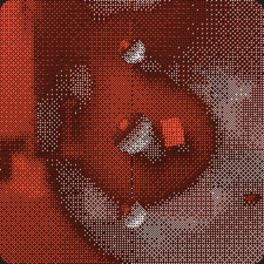

markdown‑файлы в вашей папке
каждая заметка — обычный .md файл, выберите любую папку и приложение начнёт работать
<notes> — единый центр работы, пишите Markdown, диктуйте голосом, ставьте задачи

каждая заметка — обычный .md файл, выберите любую папку и приложение начнёт работать

добавьте дату к задаче в заметке, она появится в apple calendar, никаких отдельных приложений для планирования

найдите заметку даже если не помните точные слова, семантический поиск понимает контекст

нажмите хоткей в любом приложении и речь превратится в текст, расшифровка с таймкодами и именами спикеров, работает локально

создавайте шаблоны заметок для ускорения работы с заметками

папка хранит всю историю изменений, верните любую правку, github подключается по желанию
сайт в разработке